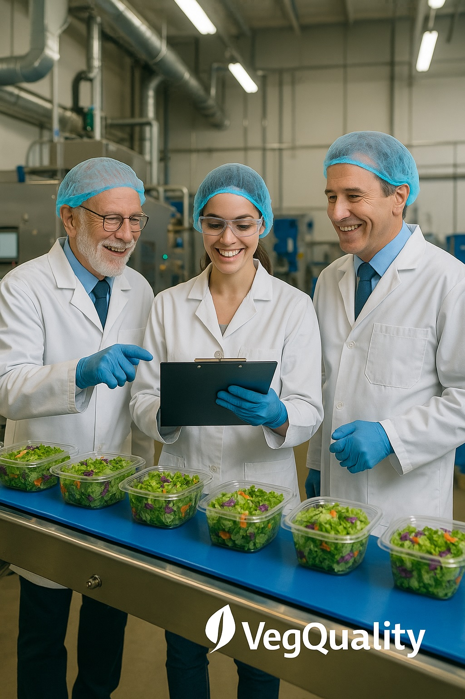
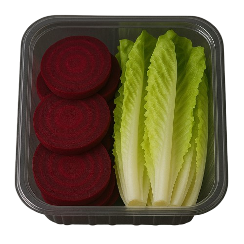

Blog & Radar FLV
Novidades, legislação, tecnologia alimentar e estratégias de mercado para impulsionar sua agroindústria.

SP endurece inspeção de vegetais processados
No último dia 10 de março de 2026, foi publicado o Decreto nº 70.447, que regulamenta a Lei nº 18.154/2025...
Leia Mais
Quem Planeja Escala, Lucra. Quem Improvisa, Perde.
Evite prejuízos na cadeia de hortifrúti. Estruturar processos operacionais de higienização de FLV com clareza...
Leia Mais
Tendências e Oportunidades para 2026
Iniciamos mais um ano com renovada energia, compromisso e responsabilidade com a agroindústria de vegetais frescos e minimamente processados. Desejamos a toda cadeia produtiva que este seja um ano de boas colheitas...
Leia Mais
Colheita de Grandes Resultados
Neste ano, ampliamos e fortalecemos nossos programas de consultoria técnica e soluções personalizadas, impulsionando resultados reais para nossos clientes em agroindústrias de todos os portes...
Leia Mais
A maturidade e os desafios da agroindústria de vegetais no Brasil
Por Dra. Roseane Bob — Especialista em Vegetais Frescos, Segurança dos Alimentos e Sustentabilidade. Trabalhar com vegetais higienizados é um compromisso diário com a natureza, o alimento e a ciência...
Leia Mais
Veg Oxi 200: mais frescor e durabilidade para flv no verão
O verão traz grandes oportunidades de mercado, mas também é o período mais crítico para verduras e vegetais frescos. As temperaturas elevadas aumentam o metabolismo dos vegetais, intensificando a oxidação...
Leia Mais
Transforme a Sua Agroindústria com a VegQuality
A VegQuality não é apenas uma consultoria, é uma parceira estratégica que entende a fundo os desafios e as oportunidades da agroindústria de vegetais frescos. O diferencial está na combinação de ciência...
Leia Mais
Veg Oxi 200: A Revolução na Conservação de Vegetais
Se você trabalha com vegetais frescos, higienizados e prontos para o consumo, é hora de conhecer o Veg Oxi 200. Esta solução inovadora é uma alternativa saudável e eficaz ao metabissulfito e outros sulfitos...
Leia MaisMaximizando a Lucratividade na Agricultura Familiar
Agricultura Familiar – Sustentabilidade e Valor Social. A agricultura familiar é muito mais do que um modelo de produção: ela é a base da segurança alimentar e do desenvolvimento rural regional...
Leia Mais